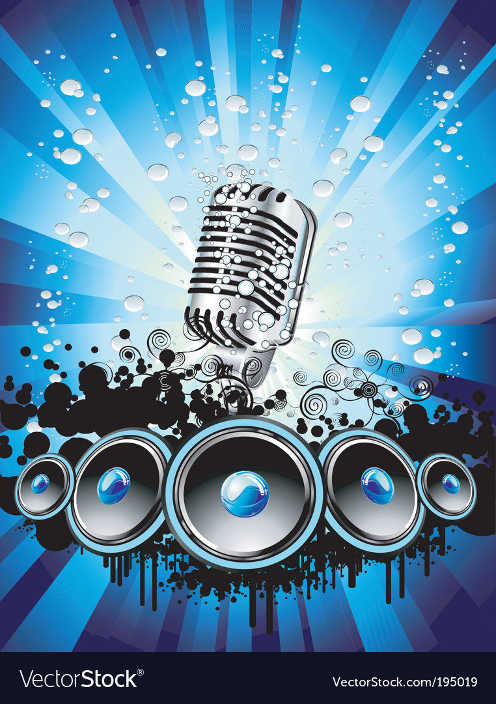

MUSICAL EVENT
Violins are used in a wide variety of genres but are most prominent in Western classical music. They are also quite popular in folk, bluegrass, jazz, Indian classical and Iranian music. Sometimes informally called a fiddle, this is a nickname and does not denote a certain type of violin or musical genre.

MUSIC
musical sound, any tone with characteristics such as controlled pitch and timbre. The sounds are produced by instruments in which the periodic vibrations can be controlled by the performer.
MUSIC

MUSICAL EVENT
Each song announced had a different meaning and a different reason for it being written. For example, the one song was written after the Cleveland Cavaliers won the championship game and how they felt.